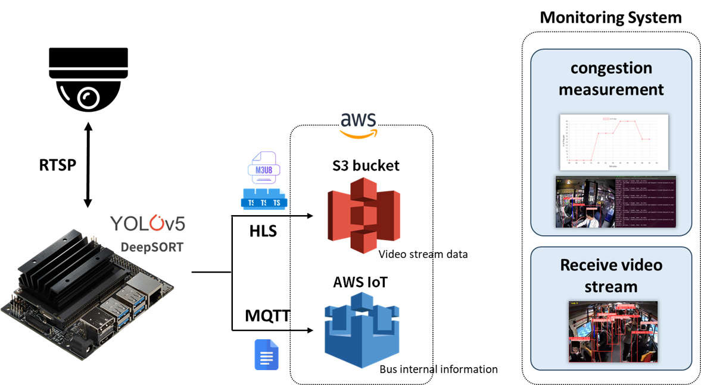
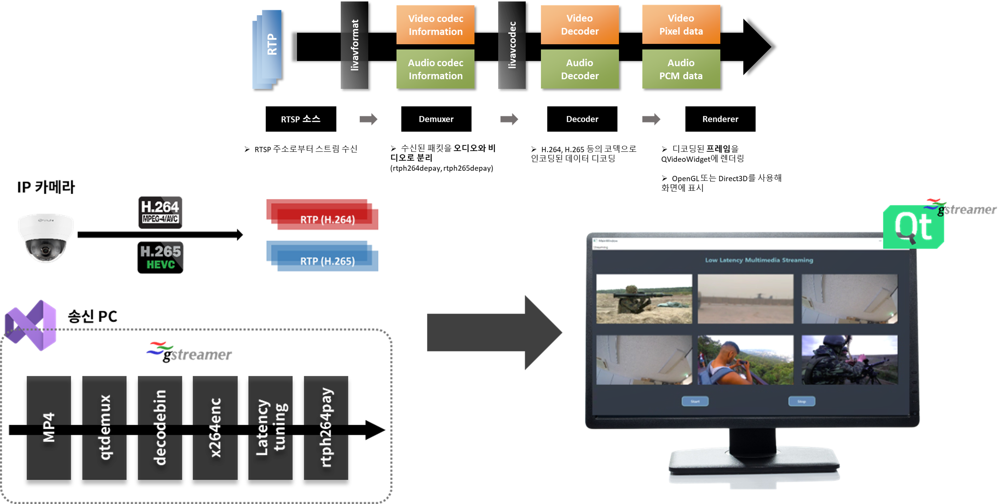
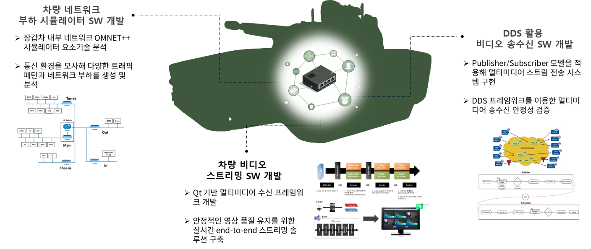
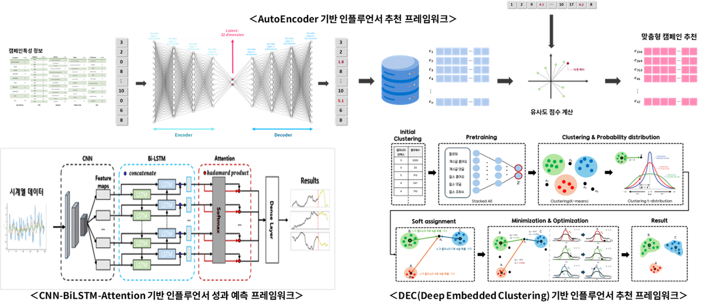
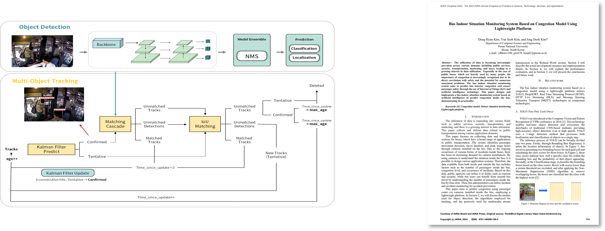
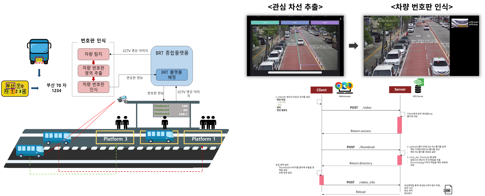
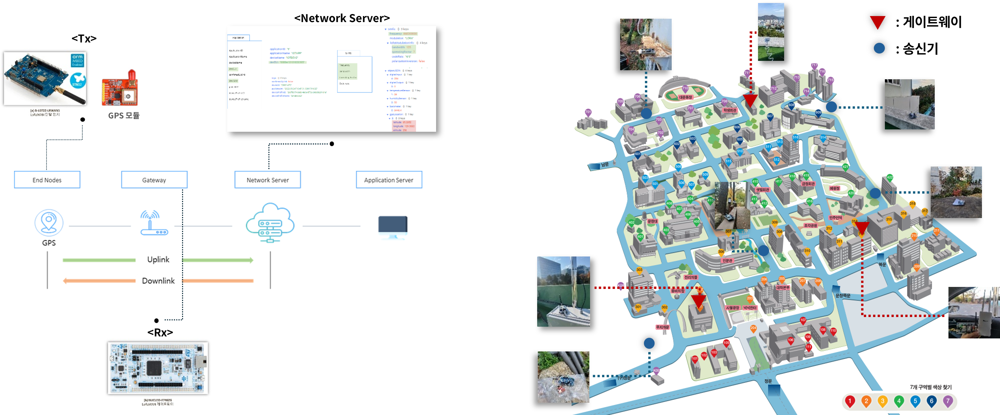

Yun-Seob Kim
Integrated Ph.D. Student | INC Lab @ Pusan National University
무선 통신과 인공지능의 융합을 연구하는 통합과정 연구원입니다. 특히 초저전력, 초저 SNR 환경에서의 LoRa 무선 통신 시스템 개선과 경량화된 딥러닝/머신러닝 모델 개발에 주력하고 있습니다. 신호 처리 기술과 최신 AI 아키텍처(CNN, Transformer 등)를 결합하여 국방, 조선해양, 스마트 시티 등 실제 산업 환경에 적용 가능한 강건한 시스템을 구축하는 것에 관심이 많습니다.
Publications

Chirp-Aware Self-Attention for Robust LoRa Preamble Detection under Ultra-Low SNR
IEEE Internet of Things Journal (2026)
초저 SNR 환경에서 LoRa 프리앰블 탐지 성능을 극대화하기 위해 Chirp 신호의 특성을 반영한 연구입니다.
🔗 Paper LinkAbstract (요약)
여기에 논문의 초록(Abstract)이나 자세한 연구 배경을 적어주세요. 기존 방식의 한계점과 본 논문에서 제안하는 Self-Attention 메커니즘의 수학적/구조적 이점을 상세히 기술할 수 있습니다.
My Contribution (나의 기여도)
- 모델 아키텍처 설계 및 파이토치(PyTorch) 구현
- 시뮬레이션 환경 구축 및 성능 평가 데이터 추출

Bus Indoor Situation Monitoring System Based on Congestion Model Using Lightweight Platform
IARIA Congress 2024 (2024)
초저 SNR 환경에서 LoRa 프리앰블 탐지 성능을 극대화하기 위해 Chirp 신호의 특성을 반영한 연구입니다.
🔗 Paper LinkAbstract (요약)
여기에 논문의 초록(Abstract)이나 자세한 연구 배경을 적어주세요. 기존 방식의 한계점과 본 논문에서 제안하는 Self-Attention 메커니즘의 수학적/구조적 이점을 상세히 기술할 수 있습니다.
My Contribution (나의 기여도)
- 모델 아키텍처 설계 및 파이토치(PyTorch) 구현
- 시뮬레이션 환경 구축 및 성능 평가 데이터 추출
Projects
GVA 한화-데이터 네트워크 구조 설계 및 성능 검증 (2024)
Qt 6.5 기반 다중 카메라 영상 스트림의 저지연 처리 및 시각화 SW 개발
- GStreamer 파이프라인 설계 및 구현 : H.264/H.265 코덱의 다중 스트림을 실시간으로 송수신하는 GStreamer 파이프라인을 설계
- Qt 기반 저지연 렌더링 기능 개발 : GStreamer와 Qt 프레임워크와 연동하여 수신 및 디코딩된 영상 데이터를 다중 화면 디스플레이에 저지연으로 렌더링하는 기능을 구현

차세대 장갑차 GVA (Generic Vehicle Architecture) 기반 네트워크 분석 및 SW 개발 (2022~2023)
차세대 군용 전투차량의 네트워크 트래픽 구조 분석 및 최적화 방안 설계
- 네트워크 최적화 : GVA 네트워크의 부하를 분석하여 실시간 데이터 전송 안정성 확보
- 실시간 영상 처리 : 다중 카메라 영상 스트림의 저지연 처리 및 시각화 SW 개발
- DDS 미들웨어 : DDS 미들웨어 기반 기반 영상 스트림 송수신 구조 설계 및 성능 검증

인플루언서를 위한 인공지능 기반 최적 캠페인 추천 프레임워크를 갖는 시스템 개발 (2024)
3가지 모델 개발 과정 총괄 및 협업 주도 → 연구 방향 설정과 성과 목표 달성 리드
- 프로젝트 매니지먼트 : DeepSORT를 적용, 이동과 겹침이 잦은 환경에서도 고유 ID로 승객을 식별하여 실시간 인원수를 집계하는 기능 개발
- 핵심 모델 개발 및 성능 검증 : 신경망 설계부터 학습, 성능 평가까지 전 과정을 주도하여 추천 시스템의 기반 구축

버스 내부 상황 정보 전달을 위한 혼잡도 및 버스 인원수 측정 기술 (2023)
승객에게 실시간 혼잡도 정보를 제공하여 대중교통 이용 편의성을 높이고, 합리적인 탑승 선택을 지원하는 것을 목표로 진행
- 실시간 객체 추적 : DeepSORT를 적용, 이동과 겹침이 잦은 환경에서도 고유 ID로 승객을 식별하여 실시간 인원수를 집계하는 기능 개발
- 모니터링 시스템 구축 : 경량 엣지 컴퓨팅 시스템을 구축하여 영상 스트림을 보드 내에서 처리하는 시스템 설계
IARIA Congress 2024 Best Award 수상

차량 번호판 인식 기술을 적용한 버스 정위치 정차 시스템 (2022)
버스 정류장의 실시간 영상에서 특정 버스의 진입을 인지하고, 정위치 정차를 유도하는 시스템 개발을 목표로 진행
- 실시간 차량 탐지 및 번호판 인식 : 비전 기반 차량 탐지 및 번호판 인식 기술 개발
- 애플리케이션 연동 및 시각화 : 관심 차선 추출과 인식된 번호판을 웹 화면에 실시간으로 표시

야드 전 영역 및 선박 내부 환경을 고려한 광대역 저전력 네트워크 설계 및 적용성 평가 (2021)
넓고 복잡한 야드 환경에서 GPS 장비의 위치를 실시간으로 추적하기 위해 LoRa 통신망 설계와 펌웨어 개발
- 펌웨어 개발 : LoRa 송신 보드에 GPS 모듈 탑재(UART 통신) 및 LoRa 신호를 송수신하는 펌웨어 개발데이터 파이프라인
- 구축 : LoRa 수신 데이터를 네트워크 서버로 전송하여 웹 화면에 실시간으로 시각화
